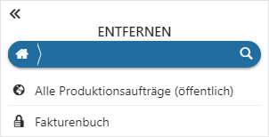
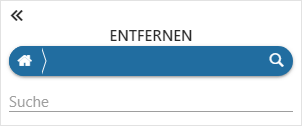

Power Report - Hauptmenü - Datenquelle entfernen
Durch Anwahl des Eintrags "Datenquelle entfernen" können importierte Datenquellen wieder entfernt werden.
Achtung
Durch das Entfernen der Datenquelle, werden alle zugehörigen Widgets ebenfalls entfernt!

Datenquellensuche

Ø Suche
Mit Hilfe des Lupen-Symbols wird der Suchbereich geöffnet. Hier kann durch Eingabe eines Suchbegriffs nach importierten Datenquellen gesucht werden, wobei die Suche in Form einer Volltextsuche erfolgt.
Datenquelle
Ø Privat / Öffentlich
An dieser Stelle muss gewählt werden, welche zuvor importierte Datenquelle entfernt werden soll. Mit Hilfe eines Icons wird die Art der Datenquelle angezeigt:
ü - private Datenquelle
ü  - öffentliche Datenquelle
- öffentliche Datenquelle